Journal Articles
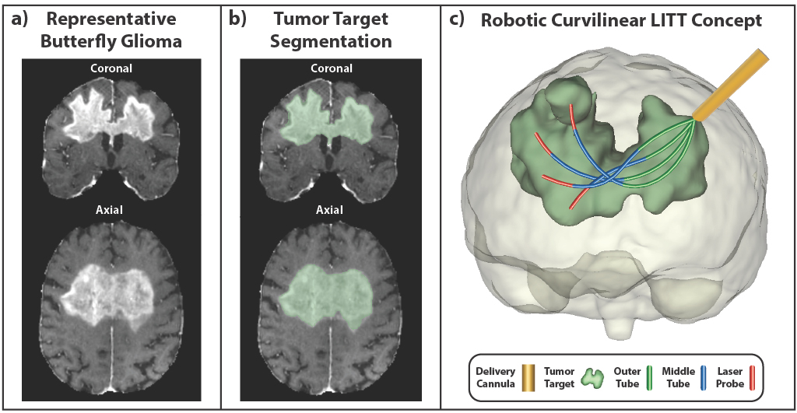
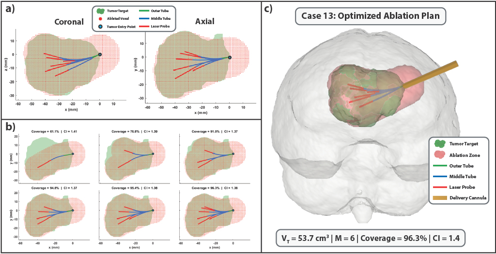
|
Optimization of Nonlinear Trajectories for Robotic Treatment of Butterfly Gliomas
John E. Peters, Abby M. Grillo, Nithin S. Kumar, Mahshid Mansouri, Brian J. Williams, Joseph S. Neimat, Eric J. Barth
Operative Neurosurgery. In preparation.
This work presents a feasibility analysis of delivering curvilinear MR-guided laser interstitial thermal therapy (MRgLITT)
for butterfly gliomas (bGM), a geometrically complex and difficult to treat brain tumor, using concentric tube robots (CTR). The goal
is to answer a clinically relevant translation question: is near-total, conformal ablation achievable from a single cranial access point,
and what robotic design and actuation parameters are required? To answer this, we created a design optimization and ablation planning
framework for a minimally invasive, continuum robot for neurosurgery.
|
|
|
Conforming to Curvature: Improving Hippocampal Ablation Coverage with Robotic, Curvilinear, Directional MRgLITT
John E. Peters, Nithin S. Kumar, Abby Grillo, Mahshid Mansouri, Saikat Sengupta, Sarah Garrow, Kerrin Sunshine, William A. Grissom, Robert J. Webster III, Eric J. Barth
IEEE Transactions on Biomedical Engineering. In preparation.
In this work we extended the neurosurgical robot from curved needle delivery to conformal therapy by integrating a
directional laser probe and real-time MR thermometry monitoring. This enabled us to achieve 84.2% mean hippocampal ablation
coverage versus the reported 56% clinical average in tissue-mimicking phantoms.
|
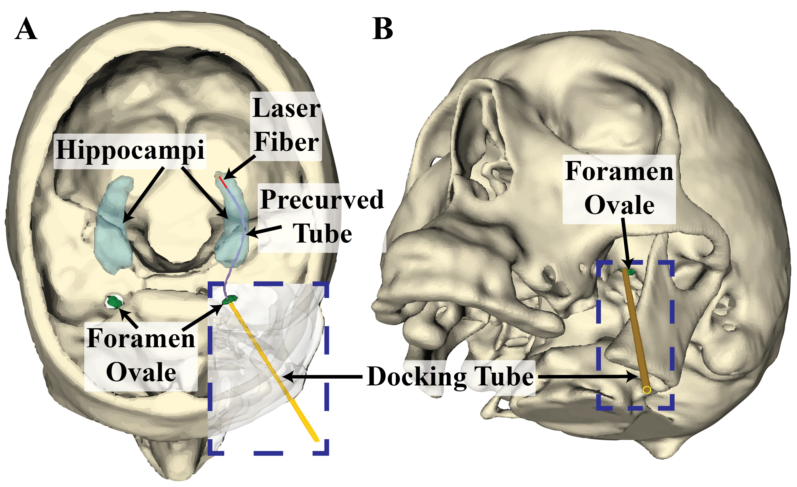
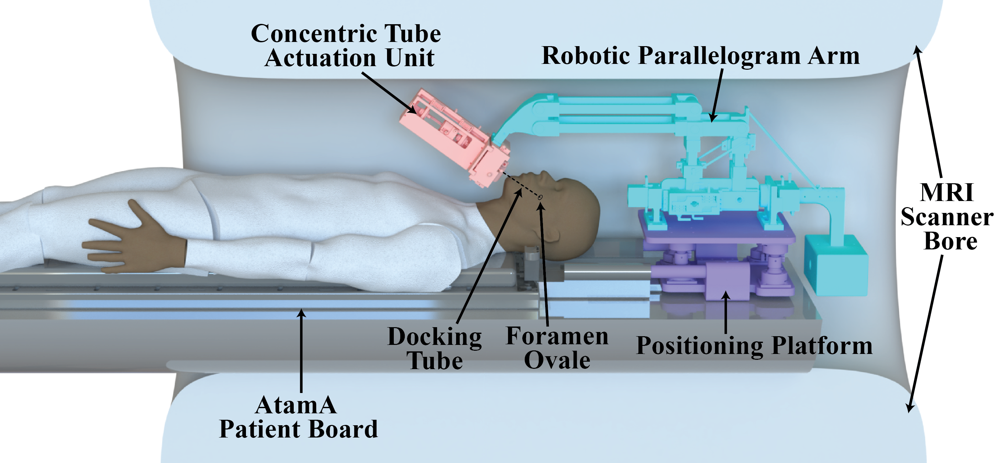
|
An MRI-Guided Robotic System to Improve Hippocampal Access for Epilepsy Interventions
John E. Peters, Abby M. Grillo, Mahshid Mansouri, Daniel S. Esser, Sarah Garrow, Nithin S. Kumar, William A. Grissom, Dario J. Englot, Joseph S. Neimat, Robert J. Webster III, Eric J. Barth
Annals of Biomedical Engineering. In review.
Designed and experimentally validated a compact 6-DOF, MRI-compatible robotic system for minimally invasive neurosurgery.
This system was designed to improve hippocampal access, a common seizure source in drug-resistant epilepsy, by delivering
a curved needle-like laser ablator through a natural opening in the skull base. Both the delivery path and the curved nature
of the needle improve upon current clinical straight-line laser interstitial thermal therapy (LITT) as measured by
hippocampal cannulation percentage. In MRI-guided experiments, we achieved a mean cannulation percentage of 83.5% exceeding
reported clinical averages of 50-60%. Seizure control is believed by physicians to be a function of hippocampal
volume treated, and our system provides a means of treating a greater volume of the hippocampus with LITT-based interventions.
|
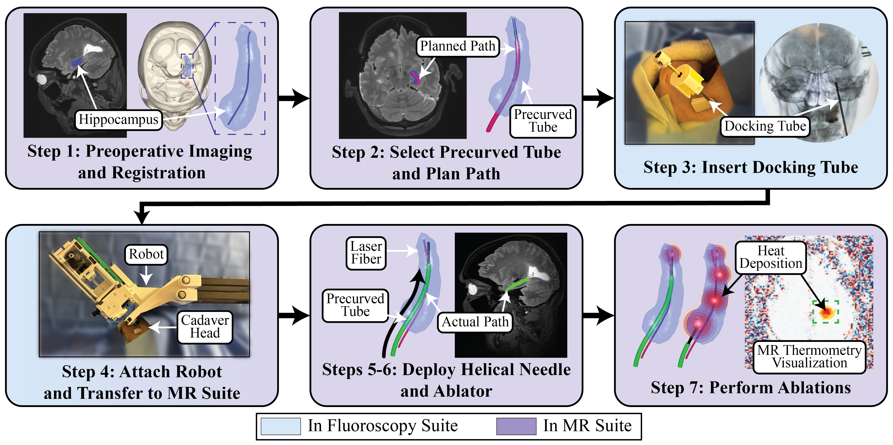
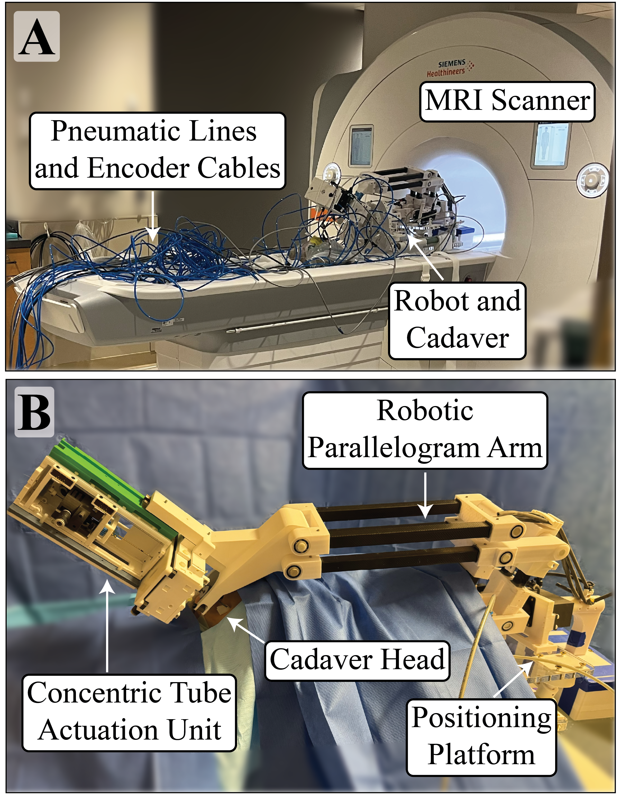
|
MR-Guided Robotic Transforaminal Laser Interstitial Thermal Therapy for Epilepsy: Initial In-Scanner Cadaver Experience
Abby Grillo, John E. Peters, Mahshid Mansouri, Sarah Garrow, Kerrin Sunshine, Michael Staudt, Anuj Sharma, William A. Grissom, Eric J. Barth, Robert J. Webster III
IEEE Transactions on Biomedical Engineering. In review.
In this research, we took a step towards clinical translation of our system by testing our envisioned robotic workflow in
human cadavers. This involved end-to-end validation of the research in a clinical setting with clinician stakeholders at every
step.
|
|
|
Real-Time Data-Driven Task-Space Control of Tendon-Driven Continuum Robots
Nithin S. Kumar, John E. Peters, Eric J. Barth.
ASME/IEEE Transactions on Mechatronics. In preparation.
This work extended our previous data-driven approach to 3D task space control of tendon-driven continuum robots. A novel
modeling and control framework was developed for these robots, learning static mappings from actuator commands to tip
position and orientation from just 600 s of experimental data. The learned models are exploited for optimization-based
feedforward inversion and Jacobian feedback, enabling real-time millimeter-scale tracking without an explicit
mechanics-based model. These results demonstrate that learned static input-output models provide an accurate and
computationally efficient foundation for real-time continuum-robot task-space control.
|
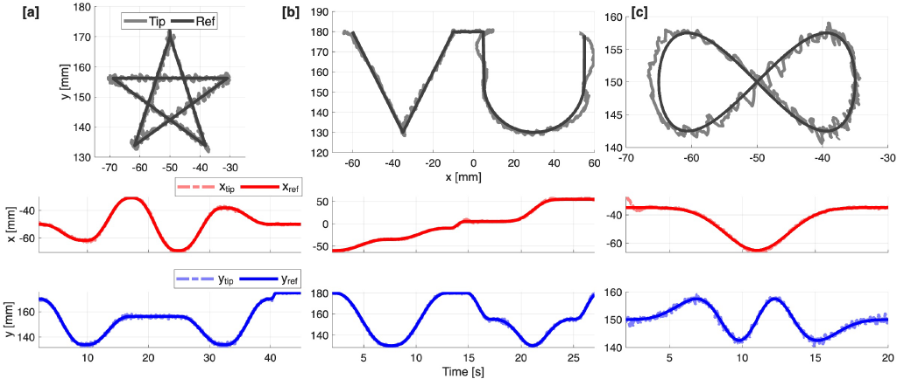
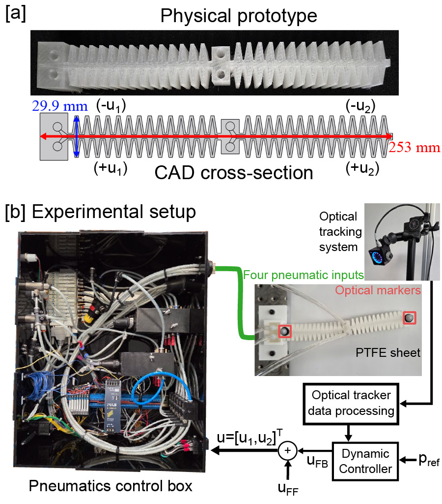
|
Data-driven Dynamic Modeling and Control of Pneumatic Soft Actuators with Stability Analysis
Nithin S. Kumar, John E. Peters, Thomas Beckers, Eric J. Barth.
ASME Letters in Dynamic Systems and Control. Accepted. 2026.
Continuum robots offer inherent compliance and dexterity, but their nonlinear deformation and coupled actuation make
accurate modeling and task-space control challenging. This work developed a data-driven modeling and control framework
for pneumatically actuated, soft robots. Using experimentally learned, nonlinear feedforward maps combined with
EDMDc residual dynamics we achieved 2 mm RMSE positional control of the robot tip. This was demonstrated on shape rich
trajectories with less than 10 mm RMSE at tip speeds exceeding 100 mm/s. The learned model also enables closed-loop
stability prediction without requiring an explicit first-principles dynamic model.
|
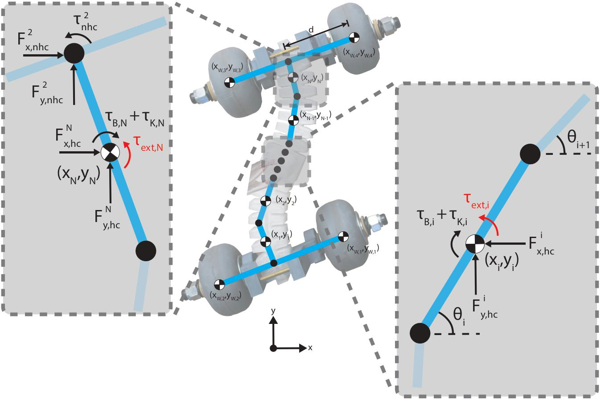
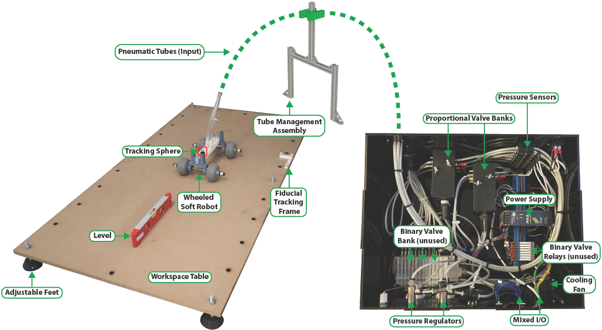
|
Constrained Lagrangian-Based, Nonholonomic Modeling and Validation of a Pneumatically Actuated Wheeled Soft Robot
Nithin S. Kumar, John E. Peters, Sung Y. Kim, Joshua Gaston, D. Caleb Rucker, Eric J. Barth
Journal of Mechanisms and Robotics. Published. 2026.
In this work, we designed a pneumatically actuated, wheeled soft robot and a constrained, Lagrangian-based model to accurately
capture its highly dynamic, non-holonomic locomotion. The robot achieved speeds up to 22 cm/s (1.38 body lengths/s) and demonstrated
forward, reverse, and circular locomotion. The modeling framework was validated across three different designs, accurately
reproducing their experimentally observed configuration and velocity trends.
|
Conference Papers
|
|
A 6-DOF Positioning Platform for MR-Guided, In-Scanner Transforaminal Epilepsy Interventions
A. M. Grillo, John E. Peters, Eric J. Barth, Robert J. Webster III
Hamlyn Symposium on Medical Robotics, 2025.
This work developed a MRI-compatible parallel platform that supported the robotic system and enabled clinician adjustment of the mechanically enforced remote center of motion (RCM). The goal is to place the RCM at the entry point into the brain, the foramen ovale, allowing the robot to pivot about this point for aiming purposes while avoiding tissue shear.
|
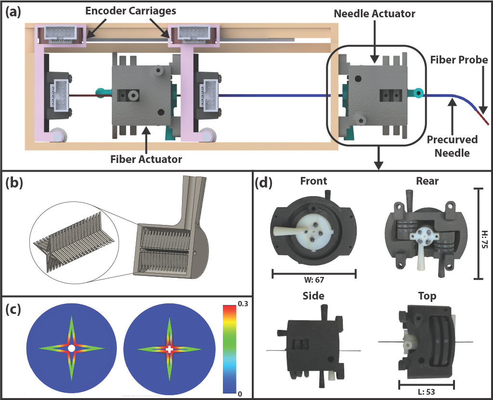
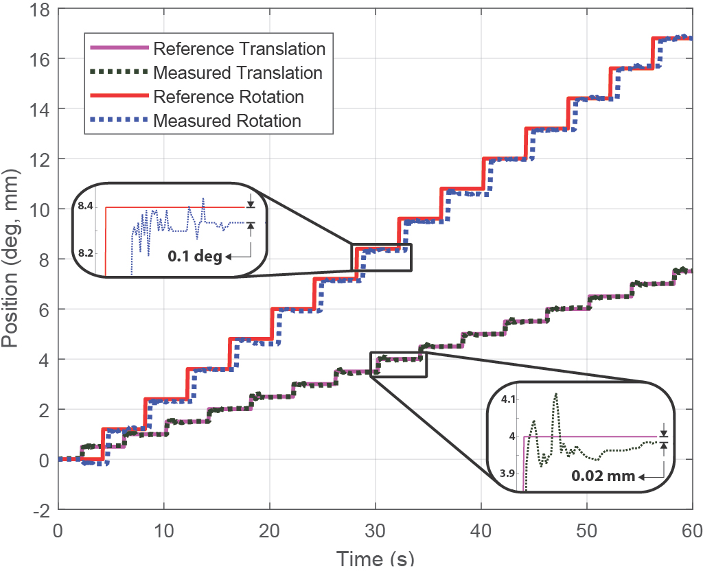
|
Toward In-Scanner Transforaminal Epilepsy Interventions: A Compact MR-Safe Concentric Tube Actuation System
John E. Peters, Daniel Esser, Abby Grillo, Nithin S. Kumar, Robert J. Webster III, Eric J. Barth
Hamlyn Symposium on Medical Robotics, 2024.
This work focused on the design and integration of a compact, 4-DOF actuation system that eliminates added length associated with transmission elements and directly manipulates the needle and laser fiber.
|
|
|
A Highly Compact, Multi-Material, Fluid Powered Actuation System for MRI-Guided Surgical Intervention
John E. Peters, Abby M. Grillo, Daniel S. Esser, Sarah J. Garrow, Nithin S. Kumar, Tyler Ball, Robert Naftel, Dario J. Englot, Joseph Neimat, William A. Grissom, Robert J. Webster, Eric J. Barth
ASME/Bath Symposium on Fluid Power and Motion Control, 2023.
This paper focused on the design of compact, pneumatic actuators that could be used inside of the scanner bore. These 3D printed, nylon
actuators operate in a safe, inchworm-like manner by slowly rotating and advancing needles into brain tissue.
|
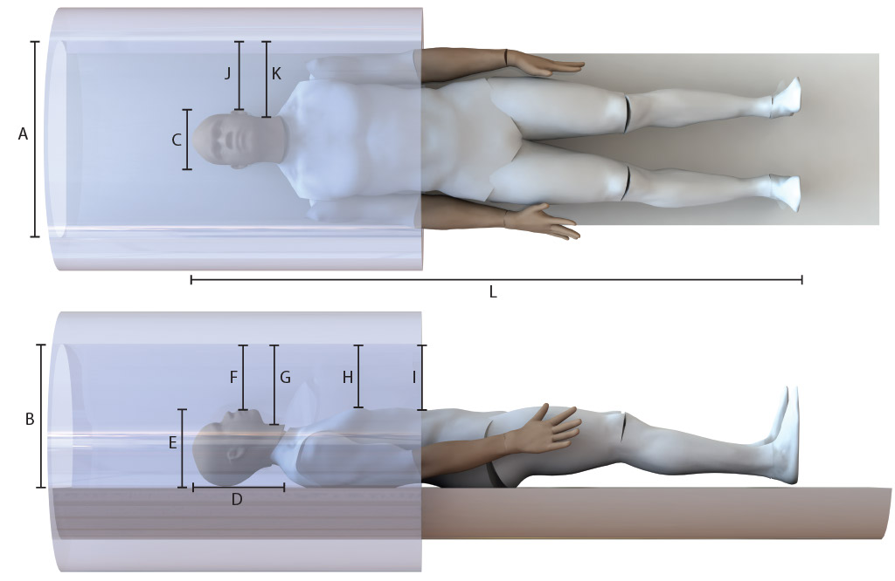
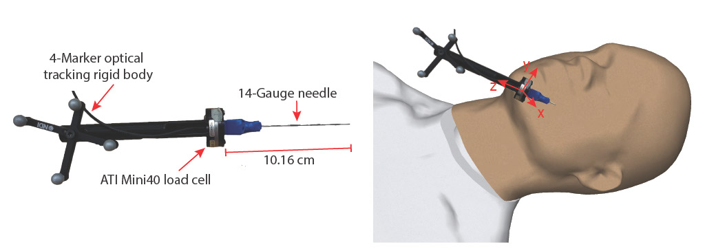
|
Design Considerations for Robotic, MRI-Guided, Trans-Foramen Ovale Access to the Brain
Abby M. Grillo, John E. Peters, Daniel S. Esser, Sarah J. Garrow, Tyler Ball, Robert Naftel, Dario J. Englot, Joseph Neimat, William A. Grissom, Eric J. Barth, Robert J. Webster III
SPIE, 2023.
This research explored what design requirements must be considered when designing a robot for transforaminal access to the brain within the confined space of an MRI scanner bore.
|
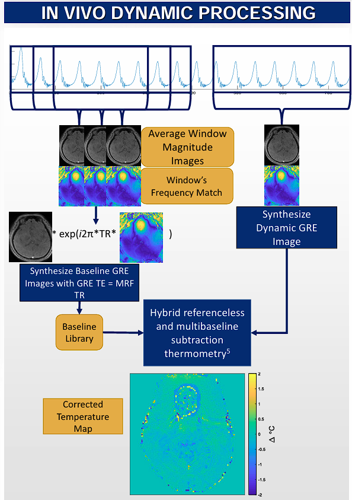
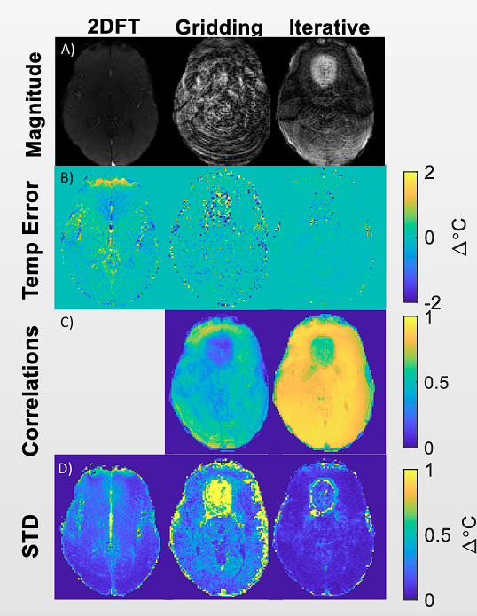
|
MR Thermometry by Quadratic Phase MR Fingerprinting
Sarah J. Garrow, John E. Peters, Abby M. Grillo, Kathryn E. Keenan, Mark A. Griswold, William A. Grissom
Proceedings of the 31st Annual Meeting of the International Society for Magnetic Resonance in Medicine (ISMRM), 2023.
This work explored new ways of measuring/reconstructing MRI-detected temperature changes via MR-thermometry that is faster and less sensitive to motion than prior methods.
|
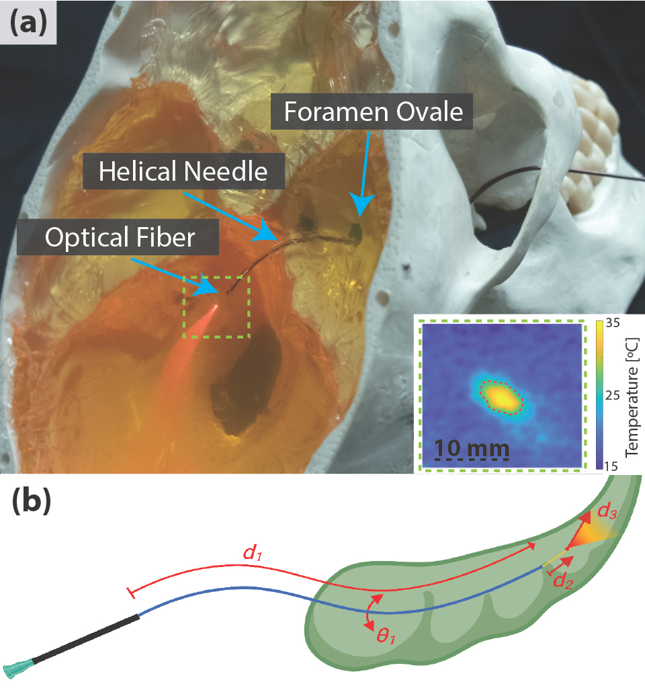
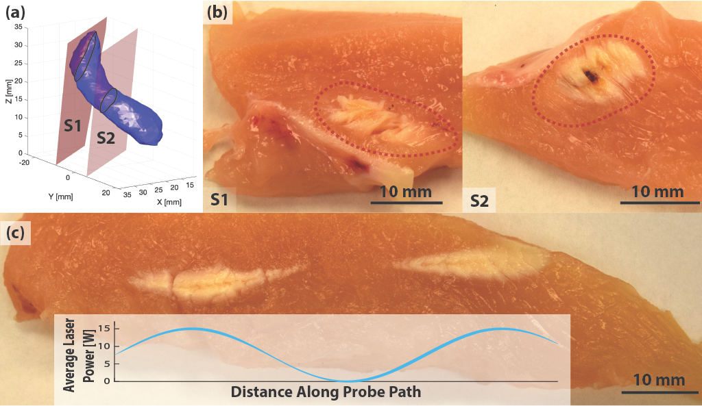
|
Robotic Curvilinear Laser Thermal Therapy Probe for Transforaminal Hippocampotomy
Daniel S. Esser, John E. Peters, Abby M. Grillo, Eric J. Barth, Robert J. Webster III
Hamlyn Symposium on Medical Robotics, 2022.
This paper was a first step towards ablating along patient-specific, curvilinear trajectories with a helical ablation probe.
|
Patents
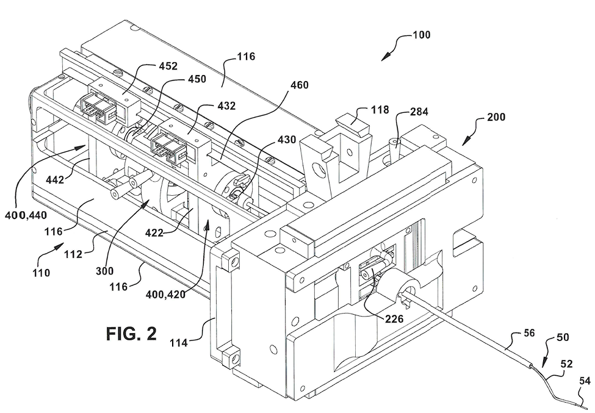
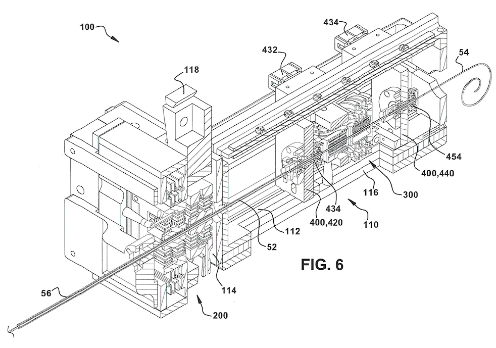
|
Robotic Surgical System, Apparatus, and Method
John E. Peters, Daniel Solomon Esser, Eric John Barth, Robert James Webster, Abby M. Grillo
U.S. Patent Application Publication US20260000870A1, Jan. 1, 2026.
Patent
|
|